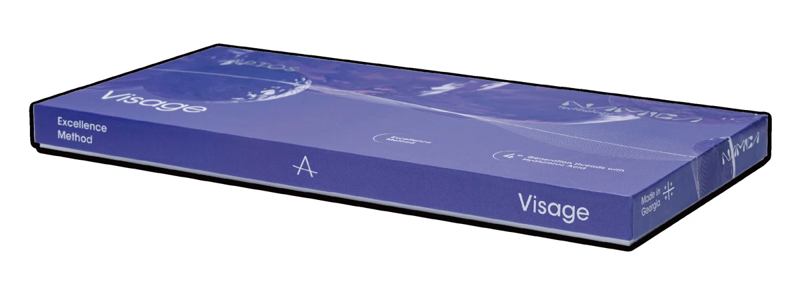
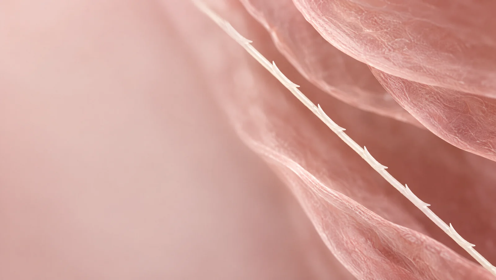
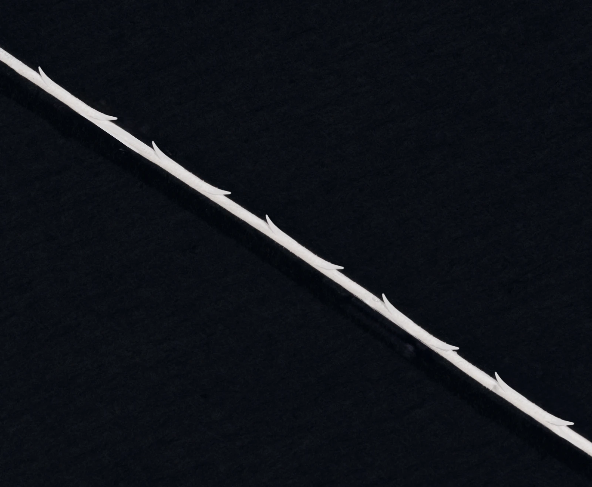
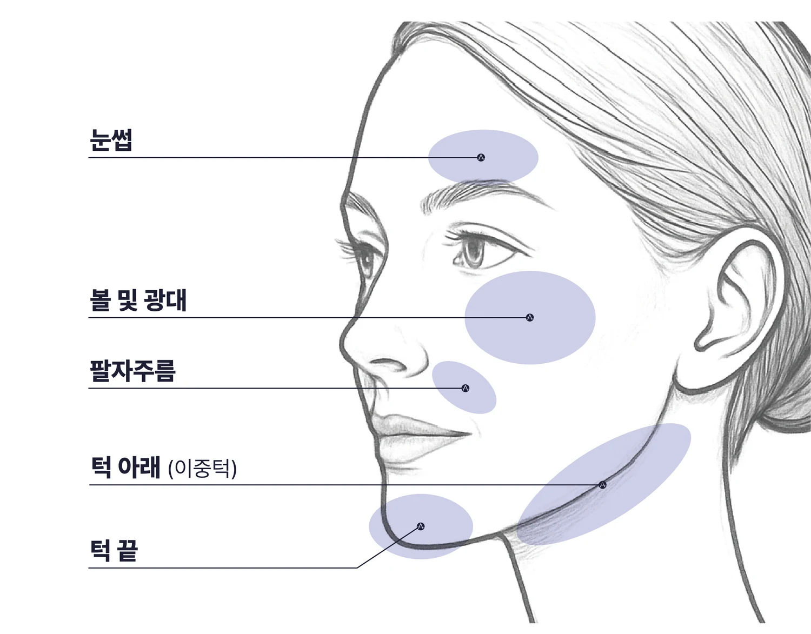
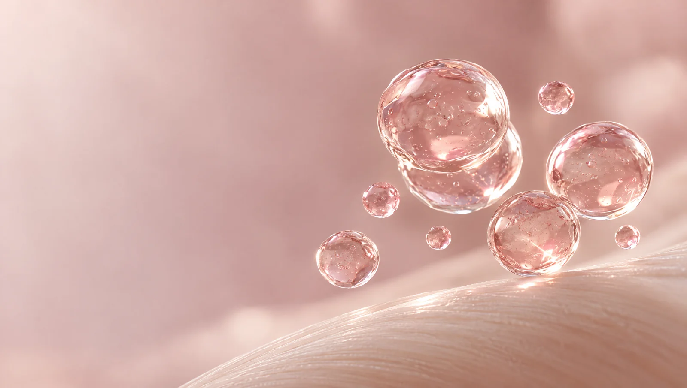
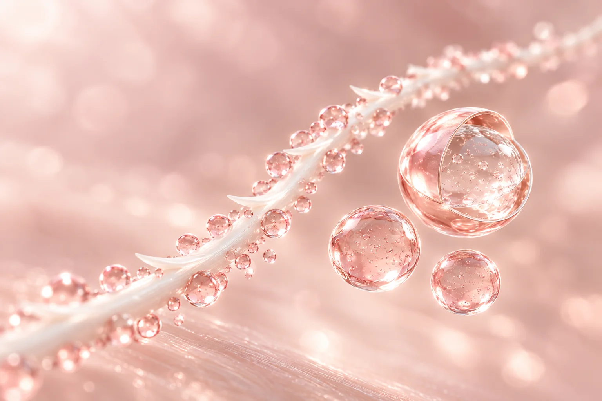
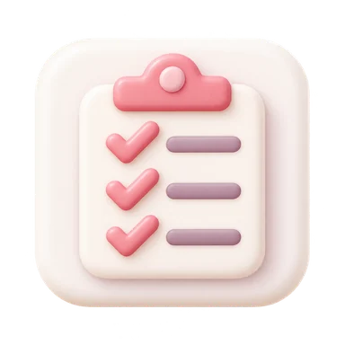
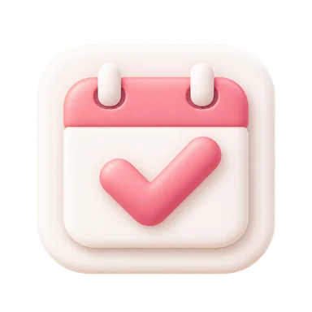

볼과 턱선의 처짐
정면과 옆모습을 함께 보며
어느 부위가 어떻게 달라졌는지 확인합니다.
BEAUTY BLOSSOM · THREAD LIFTING
얼굴의 균형을 따라,
선을 섬세하게.
처짐의 방향과 피부 상태를 살피고,
내 얼굴에 맞는 실과 디자인을 상담합니다.
A LINE, DESIGNED FOR YOU
같은 처짐도 피부의 두께와 탄력,
얼굴의 균형에 따라 접근이 달라집니다.
뷰티블라썸은 지금의 얼굴부터 세심하게 살핍니다.
정면과 옆모습을 함께 보며
어느 부위가 어떻게 달라졌는지 확인합니다.
피부 상태와 조직의 움직임을 살피고
시술의 적합성을 상담합니다.
기존 실리프팅·필러 등 시술 이력과
중요한 일정을 함께 고려합니다.

Visage Excellence Method · NAMICABRAND & TECHNOLOGY
압토스는 여러 소재와 형태의 실리프팅 제품군을 가진 브랜드입니다. 피부 상태와 시술 부위에 맞춰 제품의 특성을 살펴봅니다.
나미카는 히알루론산을 미세한 캡슐에 담는 기술입니다. 적용 제품과 기술을 함께 확인하고 내 얼굴에 맞는 계획을 상담합니다.
THE NAMICA COLLECTION
콜라겐 부스터부터 윤곽 리프팅까지.
나미카 19 · S · NANO의 중점 관리를 살펴보세요.
바이오스티뮬레이터 & 리프팅
19cm 길이와 다방향 바브 구조로 처진 조직을 받쳐 얼굴선을 정돈하는 데 도움을 줍니다. 콜라겐 형성 반응을 유도하는 바이오스티뮬레이션을 함께 고려해, 윤곽 리프팅과 피부 탄력 개선을 동시에 목표로 합니다.
필요한 부위에 집중하는 퀵 리프팅
10cm 길이의 실을 이용해 국소적인 처짐을 중심으로 리프팅을 계획합니다. 실 표면의 바브가 조직을 잡아주어 고민 부위의 라인을 정돈하는 데 도움을 주며, 얼굴의 균형에 맞춰 실의 방향과 배치를 섬세하게 설계합니다.
피부 탄력을 위한 콜라겐 부스터
흡수성 8cm 실을 활용해 피부 탄력과 잔주름을 살피는 콜라겐 부스터 옵션입니다. 실 주변의 콜라겐 형성 반응과 HA 전달을 바탕으로 피부결과 탄력 개선을 돕는 데 초점을 두며, 피부 두께와 고민 범위에 맞춰 적용합니다.
SHARED MATERIALS
나미카 19 · S · NANO는
흡수성 실 소재와 HA 기술을 함께 사용합니다.
PCL과 함께 실을 이루는 흡수성 소재로,
콜라겐 형성 반응에 관여합니다.
PLA와 결합해 P(LA/CL)을 구성하며,
실의 유연성과 물성에 관여합니다.
수분을 끌어당기는 성분으로,
NAMICA 캡슐에 담겨 단계적으로 전달됩니다.
THE DETAILS OF A THREAD
실의 소재뿐 아니라 표면의 구조와 형태도
제품마다 다릅니다. 사용할 실의 특성을 알고,
피부 상태와 처짐의 방향에 맞춰 선택합니다.

LOOK CLOSER
표면의 작은 돌기인 바브와 실의 형태를 살펴봅니다.
제품별 소재·구조·적용 범위는 상담에서 확인하세요.

DESIGNED AROUND YOUR FACE
압토스 제품 자료는 눈썹, 볼·광대, 팔자주름 주변과 턱선 등의 적용 부위를 소개합니다. 피부 두께와 처짐의 원인을 살펴 부위별 접근을 정합니다.

A CLOSER LOOK AT NAMICA
나미카(NAMICA)는 서로 다른 크기의 히알루론산 캡슐을 실 표면에 적용하는 압토스의 기술입니다. 생분해성 코팅에 담긴 HA가 시간차를 두고 전달되도록 설계했습니다.
HA를 고분자 코팅으로 감쌉니다.
마이크로·서브마이크로·나노 캡슐을 사용합니다.
캡슐과 코팅의 특성으로 전달 속도를 설계합니다.


ONE THREAD. DIFFERENT SIZES.
실의 구조와 캡슐화 기술을
조금 더 가까이 살펴보세요.
CONTROLLED RELEASE
제조사가 설명하는 입자별 방출 시점입니다.
마이크로 캡슐에서
HA가 먼저 방출됩니다.
서브마이크로 캡슐의
방출 단계가 이어집니다.
나노 캡슐이
HA를 전달하도록 설계했습니다.
THOUGHTFUL, FROM THE START
상담부터 경과 확인까지,
내 상태에 맞는 과정을 함께 정합니다.
고민하는 부위와 피부 상태,
이전 시술 이력을 확인합니다.

STEP 02사용할 제품과 적용 범위,
시술 계획을 함께 이해합니다.

STEP 03상담에서 정한 계획에 따라
시술과 상태 확인을 진행합니다.

STEP 04시술 후 관리 방법과
다음 확인 일정을 안내합니다.
AFTERCARE
시술 이후의 시간도,
안내에 따라 함께 살핍니다.
시술 후 나타나는 일시적인 불편함을 줄이기 위해 냉찜질을 권장합니다.
Use a cold compress to reduce temporary discomfort.
전문가의 소견 및 통증에 따라 처방약 복용이 가능합니다.
You may take prescribed pain medication if recommended by a professional.
시술 후 최소 24시간 동안 메이크업 하지 않습니다.
Do not apply makeup for at least 24 hours.
필요시, 약 5일간 머리를 높게 두고 똑바로 누워 잠을 잡니다.
Sleep on your back with your head elevated for about 5 days.
약 1주일간 세안(or 면도) 시 얼굴을 세게 문지르지 않습니다.
Do not rub your face harshly when washing or shaving for about 1 week.
1달 동안은 과한 표정을 짓는 등 얼굴 움직임을 최소화합니다.
Minimize extreme facial expressions for 1 month.
약 2주 동안은 격한 운동은 하지 않고, 사우나, 목욕탕 등과 같은 곳을 피해 주세요.
Avoid strenuous exercise, saunas, and hot baths for about 2 weeks.
외출 시, 자외선 차단제를 사용합니다.
Apply sunscreen when going outside.
치과 진료는 1달 이후부터 가능합니다.
Dental treatments are possible after 1 month.
얼굴 마사지, 경락 및 미용 시술은 최소 1달 이후부터 가능합니다.
Avoid facial massages or other aesthetic treatments for at least 1 month.
※ 개인차에 따라 시술 결과가 상이할 수 있으며 일시적인 통증, 멍, 붓기 등의 이상반응이 나타날 수 있습니다.
※ 병원 내원 시 전문가의 지시에 따라 안내 및 주의 사항 등을 설명 듣고 지시에 따라주시길 바랍니다.
QUESTIONS, ANSWERED
시작 전 알아두면 좋은 이야기.
압토스(APTOS)는 다양한 제품군을 가진 실리프팅 브랜드입니다. 나미카(NAMICA)는 압토스의 일부 제품에 적용되는 히알루론산 캡슐화 기술입니다. 상담에서 실제 사용할 제품과 적용 기술을 함께 확인합니다.
볼이나 턱선의 처짐, 피부 탄력과 얼굴 윤곽이 고민될 때 상담할 수 있습니다. 피부 두께, 조직의 상태와 기존 시술 이력을 살펴 실리프팅이 적합한지 확인합니다.
제품마다 소재와 구조가 다릅니다. 압토스에는 흡수성 제품과 비흡수성 제품이 있으며, 모든 제품에 나미카 기술이 적용되는 것은 아닙니다. 사용하는 제품의 종류와 특성을 상담에서 확인해 주세요.
나노(NAno), 마이크로(MIcro), 캡슐화(enCApsulation)를 조합한 이름입니다. 크기가 다른 HA 캡슐과 코팅을 통해 성분 전달 시점을 설계하는 기술을 뜻합니다.
P(LA/CL)은 락틱애시드와 카프로락톤 기반의 흡수성 고분자 소재이며, HA는 히알루론산입니다. 압토스의 HA 적용 제품은 실 소재와 히알루론산을 함께 사용합니다.
나미카 19, 나미카 S, 나미카 NANO를 상담합니다. 피부 상태와 처짐의 방향, 시술 부위를 확인한 뒤 사용할 제품과 시술 계획을 정합니다.
두 기간은 구분해서 보아야 합니다. 캡슐의 방출 설계는 HA 전달 시점을 설명하며, 리프팅 경과는 피부와 조직 상태, 사용 제품과 시술 계획에 따라 달라집니다.
사용하는 제품과 시술 부위, 피부 상태, 처짐의 방향에 따라 계획을 세웁니다. 실의 개수만으로 결과를 판단하기보다 어떤 부위를 어떻게 디자인할지 함께 상담합니다.
상담과 준비, 시술 범위, 시술 후 상태 확인에 따라 전체 방문 시간이 달라집니다. 마취 방법과 예상 소요 시간은 진료 후 안내하며, 중요한 일정이 있다면 예약할 때 알려주세요.
초기 붓기와 당김이 가라앉는 경과를 보며 변화를 확인합니다. 사용하는 제품, 피부와 조직의 상태, 생활습관에 따라 경과와 유지 기간이 달라질 수 있어 개인별로 상담합니다.
시술 후 붓기, 멍, 당김이나 통증이 생길 수 있습니다. 중요한 일정을 앞두고 있다면 회복 여유를 두고 상담하세요. 통증과 붓기가 심해지거나 열감, 분비물, 실의 노출이 있으면 병원에 연락해 확인받아 주세요.
피부 상태와 시술 목적, 이전에 받은 시술에 따라 순서와 간격을 조정합니다. 에너지 장비를 사용하는 리프팅과 실리프팅의 차이를 이해한 뒤 의료진과 적합한 계획을 상담합니다.
이전에 받은 시술의 제품명, 부위와 시점을 알려주세요. 현재 남아 있는 당김이나 통증, 만져지는 부위도 함께 이야기해 주시면 진료와 계획 수립에 도움이 됩니다.
실제로 사용하는 제품과 수량, 시술 부위에 따라 달라집니다. 상담을 통해 적용 비용과 포함되는 항목, 경과 확인 일정을 안내받을 수 있습니다.
나에게 맞는 이벤트를 펼쳐보세요.
Beauty, with care.
피부 상태와 원하는 변화를 세심하게 살피고,
정품·정량과 충분한 설명을 진료의 기본으로 생각합니다.

피부 상태와 일상, 원하는 변화를
함께 살펴 나에게 맞는 진료 계획을 세웁니다.

정품 사용과 정량 원칙을
진료의 기본으로 생각합니다.

개개인의 자연스러운 아름다움을 존중하며,
시술 과정과 관리 방법을 충분히 설명합니다.
Find us.
평일 10:00–20:00
주말·대체공휴일 10:00–16:30
점심시간 없이 진료 · 공휴일 진료는 문의
평일 10:00–20:00
주말·대체공휴일 10:00–16:30
점심시간 없이 진료 · 공휴일 진료는 문의